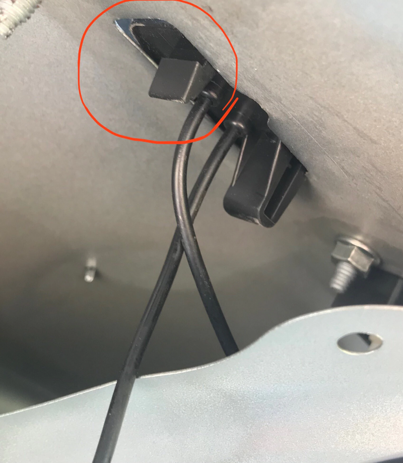
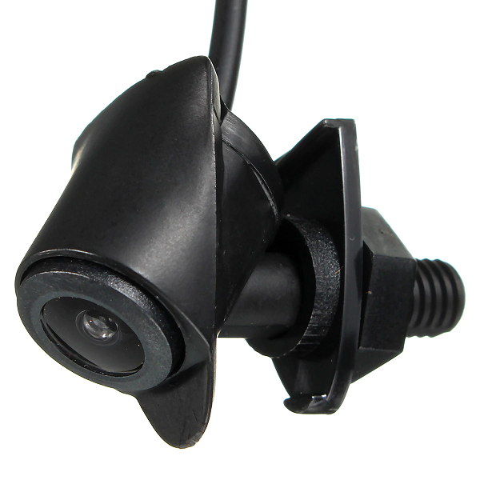

Брал весной, поэтому цена ниже, чем сейчас.
На avensis t27 седан не подходит размерами (меньше выреза лампы)
Крепить с помощью подручных средств.

Камера с динамическими линиями.
Угол поворота камера пытается определить по смещению картинки во время движения.
Когда не получается — дёргаются от середины в сторону поворота и обратно.
так-же взял камеру на нос, длины резьбы не хватает, крепил шурупом внутрь, благо стержень полый.
вот €10,06

Сверлил значёк, (картинки есть в отзывах на Алике)
Провода протянул справа по ходу движения, под бардачком есть отверстия, со жгутом проводов и свободное с резиновой заглушкой.
выводил всё на зеркало https://aliexpress.ru/item/item/32695306435.html $ 18.00
по схеме:

Реле задержки отключения 12v в сером прямоугольнике паял сам, но для повторения предлагаю 2 способа:
На картинке в серых прямоугольниках варианты колхоза, или DIY по современному.
мне нравиться больше второй (справа), но нет регулировки задержки.
вариант 1:
из этого и этого
второй вариант:
из этого или этого
ОБА НЕ ПРОВЕРЯЛ но по описанию подходят.
Как работает:
Реле включается одновременно с включением лампы заднего хода и задней камеры (нижняя на картинке).
Реле подаёт питание на монитор и переднюю камеру, но монитор при включенных камерах показывает только с задней (поменять тюльпаны, если наоборот).
При выключении лампы заднего хода, выключается камера заднего хода, реле остаётся включенным примерно секунд 10-15
Монитор сам переключается на сигнал с передней камеры.
Затем реле отключает монитор и переднюю камеру.
Т.е. что-бы посмотреть вперёд, надо включить заднюю передачу, на какое-то время.